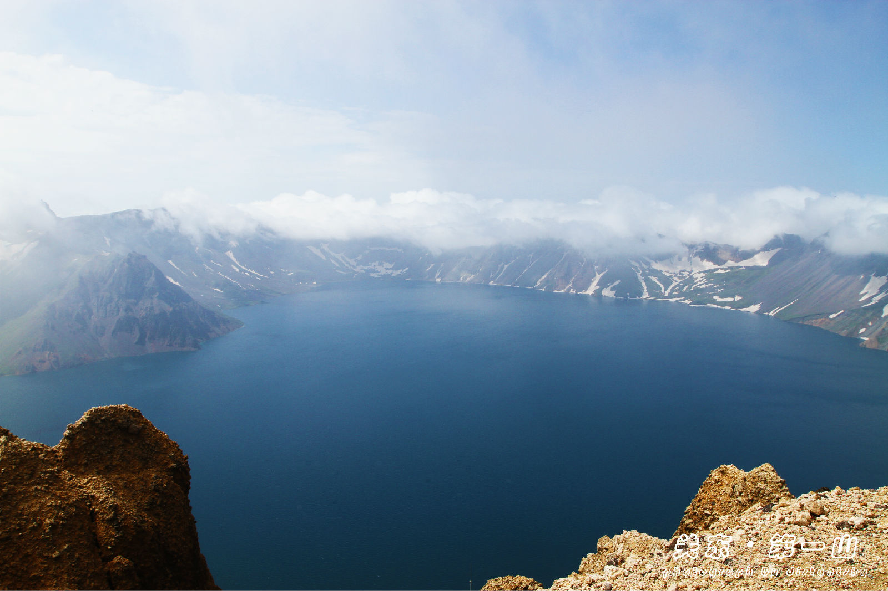

本周最热景点:长白山
长白山介绍：
长白山位于吉林省东南部地区，是中朝两国界山。广义的长白山是指长白山脉，绵延东三省上千公里；狭义的长白山则单指其主峰长白山。长白山风景区是国家首批5A级景区。 长白山在中国一侧的最高峰是白云峰，海拔2691米，为中国东北第一高峰。 长白山是一座巨型复式火山，由于其独特的地理位置和地质构造，形成了神奇壮观的火山地貌，典型完整的动植物资源，富有北国情趣的冰雪风光。 著名的长白山天池位于长白山主峰火山锥体的顶部，荣获海拔最高的火山湖吉尼斯世界之最。天池四周奇峰林立，池水碧绿清澈。 长白山还是松花江、图们江、鸭绿江的三江之源。长白山是欧亚大陆北半部最具有代表性的典型自然综合体，是世界少有的“物种基因库”和“天然博物馆”。据统计，这里生存着1800多种高等植物，栖息着50多种兽类，280多种鸟类，50种鱼类以及1000多种昆虫。 长白山的密林深处盛产人参、北五味子等药材，野生动物有濒临绝灭的东北虎及马鹿、紫貂、水獭、黑熊等。鸟类中鸳鸯、黑鹳、绿头鸭等候鸟占70%。